How to place an on-farm experiment using QGIS
This guide will cover how to take a design, and create a vector data file (GeoPackage, Shapefile, etc.) for submission to a farm business.
Import OFE trial creator plugin
I have created a plugin called the OFE Generatonator 9,000,000. Please download that. Install the plugin in QGIS by:
- Opening QGIS
- “Plugins” in the top ribbon
- “Manage and Install Plugins”
- “Install from ZIP”
- Select the OFE Generatonator 9,000,000 ZIP file.
This will install the plugin. To see it in one of the toolbars, right click on another toolbar, and enable the “Plugins Toolbar”.
Create the Trial Polygons
To create the strips for the trial, look at the toolbars for the Plugins Toolbar . Click the icon corresponding to the OFE Generatonator 9,000,000 to begin.
The plugin will open a dialog box, and request a few parameters. Hover over the blue 🛈 symbol to see info:
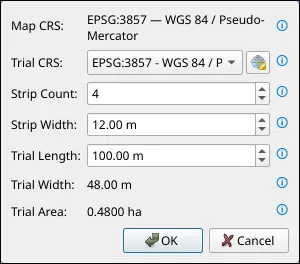
Map CRS: This is the coordinate reference system of the project/map. This is set by clicking the CRS on the bottom right of the main QGIS window. To use this tool you must have the project CRS set to one that uses metres as units. I recommend one of the WGS84 UTM zones (e.g.
epsg:32750).ImportantEnsure that your project CRS is one that uses metres for distance.
If using one of the “UTM zone” projections, ensure that it is accurate for the location of interest.
Trial CRS: This is the CRS we want the final output to have. If the farm business requires WGS84 (
epsg:4326) then this is where to enter that.Strip Count: This is the number of strips we want in our OFE. Usually equal to the number of treatments multiplied with the number of replicates
Strip Width: Width of each strip in metres. Determined by the equipment available to the farmer.
Trial Length: Length of the full trial/strips. Determined by farmers willingess to do larger trials, and by shape of the paddock.
Trial Width and Trial Area: These are generated values, used for sanity checking.
Once these are filled out, hit “OK”, and you will then need to select a line to anchor the trial on. This is usually (and should always be) the paddock’s AB line.
The AB line has multiple purposes in an OFE design.
The AB line determines both:
- The direction (back and forth) the tractor will drive on, and
- The actual path the tractor will take.
Therefore, care must be taken when designing the trial, since the strips must be centered on the AB line, and the strips must be placed such that the tractor can seed/spray/harvest the full strip while striving on the actual AB line.
To place the freshly-baked trial, you need to enable snapping by adding the Snapping Toolbar in the same way as we did for the Plugins Toolbar. Then, enable snapping by clicking the magnet icon, and ensure that snapping to “segments” is enabled.
Now, click anywhere on the AB line segment. We can now see a red preview of the trial bounds, and we are able to place the trial on either side of the AB line, and on any point along (or beyond) the line. When you are satisfied with the placement, just left click to lock it in. At any time, you may right click, or hit escape to cancel the placement.
Currently, the polygons are part of a Temporary Scratch Layer, and we definitely want to save this to disk somewhere as these temporary layers don’t persist between QGIS sessions:
- Right click the trial polygon’s layer in the Layer panel on the left of the screen.
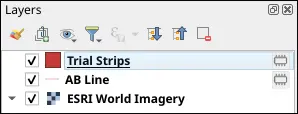
- Click Make Permanent .
- In the dialog box that appears:
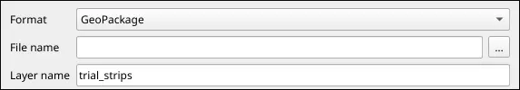
- Format should be GeoPackage (for us, we will likely use
shapefilefor submission to farm businesses later.). - File name is best chosen by hitting the button on the right.
- The rest of the options may be left as default.
- Format should be GeoPackage (for us, we will likely use
- Hit OK when ready.
The file now exists as a GeoPackage (gpkg) at your chosen file location. Remember to periodically hit the Save edits button in the toolbar to save any changes moving forward.
Tweaking Trial Placement
If you are unhappy with the placement, or wish to move the trial to some other position (perhaps the other side of the paddock):
Moving the trial:
- Right click a toolbar, add the Advanced Digitising Panel and enable it .
- Select all strips in the trial using the Select Features by Area or Single Click tool .
- Ensure Editing is enabled.
- Click Move Feature .
- In the Advanced Digitising panel
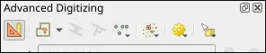
on the left of the screen, click enable advanced digitising tools . - Click anywhere on the map to start moving the polygons.
- To alter the distance perpendicular to the AB line:
- In the Advanced Digitising panel, click Perpendicular
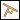
- Ensure snapping is still enabled (with “segments” enabled).
- Click the AB line as our reference for the perpendicular movement.
- We MUST move the trial in INTEGER units of the strip width. In the distance box
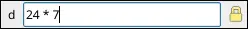
, enter the strip width, followed by an asterisk (*), followed by an INTEGER. For example:24 * 15. This will move the trial 15 strip-widths away, perpendicular to the AB line. Tweak the number to get the trial position as close to your desired position as possible.
- In the Advanced Digitising panel, click Perpendicular
- To alter the distance parallel to the AB line:
- Perform steps 1 - 3 as for perpendicular movement, but instead of clicking the Perpendicular button, click the Parallel button
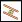
. - We may move the trial any value up and down parallel to the trial, as we don’t have tractor-width/AB-line-imposed restrictions on strip placement. Simply use your mouse (or enter a value in the “d” field) and click to set the position.
- Perform steps 1 - 3 as for perpendicular movement, but instead of clicking the Perpendicular button, click the Parallel button
- To further tweak position, perform the exact same steps outlined in step 7 or 8 until you have the trial in your desired position.
Be extremely careful when repositioning the trial!
It is very easy to accidentally invalidate the trial’s position. ONLY move the trial parallel and perpendicular to the AB line.
Trial Attributes
Now we must add important data to the trial polygons themselves. Open the Attribute Table for the layer containing the polygons (default name is “Trial Strips”) by right clicking the layer, and clicking Attribute Table
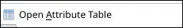
. The attribute table should open either in a floating window, or by splitting the map view.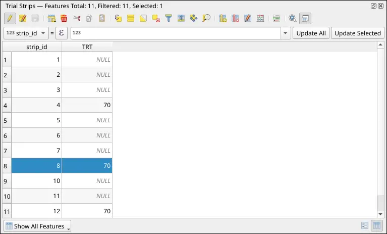
There should be two feature: strip_id, added by OFE Generatonator 9,000,000, and fid, added when we saved our layer as a GeoPackage. We probably want to add a few more features:
- Treatment /
TRT: This is the label for the treatment value the polygon represents. - Replicate /
REP: This is the label for the replicate the treatment/strip belongs to. - Farm: The name of the farm business.
- Field: The name of the paddock.
These features may take different names depending on the farm business. To add the strip replication information to the table:
Click New Field .
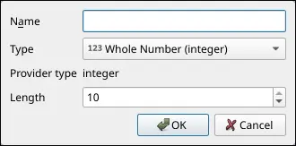
Enter the required information. Name is
REP, Type is Whole Number (integer). Hit OK when ready.You should see the new
REPcolumn/feature in the attribute table. It will be initialised toNULLfor all polygons.Enable Select Features by Area or Single Click . Holding either
CTRLorShift, in the QGIS map, select strips that belong to the first replicate in our design.Back in the attribute table, we will notice that the rows corresponding to the selected polygons are now highlighted in yellow.
Above the table itself, there is a long entry field. To the left of this, click the leftmost drop-down and select
REP.In the long entry field, insert the replicate number for the selected polygons. For numbers, insert the number (e.g.
0,1.5). For strings/text, insert the text surrounded by single quotes (e.g. ‘John’).To the right of this, hit Update Selected to assign this value to only the selected polygons.
Repeat steps 4 - 8 until all polygons have been assigned a
REPvalue in the table.Periodically hit Save edits for peace of mind.
Repeat these steps for all of the desired features.
Final Steps
Now we should have the final trial polygons. We should have a saved GeoPackage copy of the vector data, but we want a copy in the format requested by the farm business. Usually this is going to be a Shapefile:
- Right click on the layer representing our trial
- Click Export .
- Save Features As… .
- In the dialog that opens:
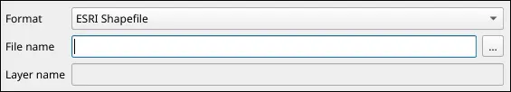
- Format: ESRI Shapefile
- File name: Choose using the … button on the right.
- Leave the rest as-is.
Now we have a GeoPackage for internal use, and a Shapefile to send to the farm business.